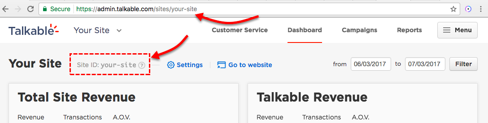

Integration Components¶
Talkable is composed of the following components:
-
Script Location. The Initialization script should be placed in the head template or some template that spans every page. All other integration components are dependent on the Init script.
Data Capture The Initialization Script should be passed variables for logged in users:
- First Name
- Last Name
-
Script Location. The Post Purchase script should be placed on the checkout confirmation page.
Script Dependency. The Post Purchase script is dependent on the Initialization script to run.
Data Capture. This script needs to capture purchase based details
- Email of purchaser
- Order Number
- Subtotal (pre-tax, post-discount amount)
- Coupon code(s) used at checkout (can accept an array of strings if you allow for multiple coupons to be applied at checkout)
- (optional) Shipping Address for additional fraud protection.
- (optional) Shopping cart line items. This is only necessary if segmenting based on cart contents.
-
Create an HTML page (URL path /share) with your standard site header and footer. Add the Talkable Container DIV in the body. This tells Talkable where to inject content.
Referral Dashboard (my account).
Similar to the advocate landing page, create an HTML page that’s linked to from a menu in user accounts. Add the Talkable Container DIV in the body. This tells Talkable where to inject content.
Initialization Script¶
The Initialization script should be placed in the head template or some template that spans every page. Talkable JS library size is typically around 20kB and causes no noticeable impact to your site’s loading time. All other integration components are dependent on the Initialization script.
<!-- Begin Talkable integration code -->
<script async src="https://d2jjzw81hqbuqv.cloudfront.net/integration/clients/your-site-id.min.js"></script>
<script>
window._talkableq = window._talkableq || [];
window._talkableq.unshift(['init', { site_id: 'your-site-id' }]);
window._talkableq.push(['authenticate_customer', {
email: '', // Optional, pass when available. Example: 'customer@example.com'
first_name: '', // Optional, pass when available. Example: 'John'
last_name: '' // Optional, pass when available. Example: 'Smith'
}]);
window._talkableq.push(['register_affiliate', {}]);
</script>
<!-- End Talkable integration code -->
Initialization Script Notes¶
Site ID. You can obtain your Site ID by logging into the Talkable platform where Site ID is displayed on your Dashboard and URL as seen here:
Variables. Use your dynamic variables to pass user details {email, first_name, last_name} if the user is logged in and the data exists. If the data does not exist, you can pass a null value or a blank string. If your website doesn’t have a user accounts section and this info is never available, it’s acceptable to completely omit the parameters, or pass empty strings.
Post Purchase Script¶
The post purchase script should be placed on your checkout confirmation page or any page that immediately follows checkout. All parameters can be passed as strings. A Number can be passed for subtotal, however, if using any calculation, you’re responsible for ensuring that some number is passed where division by zero or null value does not occur.
<!-- Begin Talkable integration code -->
<script>
var _talkable_data = {
purchase: {
order_number: '', // Unique order number. Example: '100011'
subtotal: '', // Order subtotal (pre-tax, post-discount). Example: '23.97'
coupon_code: '', // Coupon code that was used at checkout (pass multiple as an array). Example: 'SAVE20'
shipping_zip: '', // Optional - used for fraud protection by address. Example: '02222'
shipping_address: '' // Full address of the order, make sure to strictly follow a format: 'Apt #, Street address, City, State, ZIP, Country'
},
customer: {
email: '' // Customer email address who issued a purchase. Example: 'customer@example.com'
}
};
_talkableq.push(['register_purchase', _talkable_data]);
</script>
<!-- End Talkable integration code -->
Post Purchase Script Notes¶
- Mandatory parameters must be passed or the purchase will not be passed to Talkable. Mandatory parameters are: {email, order_number, subtotal}
- Coupon code is not mandatory, and Talkable will still consider it a valid purchase without this, however if you have the ability to surface this variable, then it should be passed.
- Shipping parameters are optional but gives the added benefit of additional fraud protection
- If you’re using a payment gateway that directs the user away from your domain, you should ensure that some auto return feature is enabled so that the user returns to the checkout confirmation page to allow the post purchase script to run.
- If you’re using a tag manager click here.
- If you need to pass shopping cart line items, to see the alternate post purchase integration script click here.
Advocate Landing Page¶
Create a new HTML page with URL path (www.your-site.com/share) and add the Talkable Container DIV in the body of the page between your standard site header and footer:
<div id="talkable-offer"></div>
Advocate Landing Page Notes¶
The Talkable Initialization script must be present in your head template in order for the advocate landing page to work
Talkable will inject referral content where Talkable Container resides in your DOM
URL Path: If you can’t use URL path www.your-site.com/share then you’ll need to update the Site Placements section inside of Talkable for the Invite Advocate Landing Page to match the exact URL path that you intend to use via https://www.admin.talkable.com/sites/your-site-id/placements:

Referral Dashboard¶
Similar to the Advocate Landing Page, create a new HTML page with URL path (www.your-site.com/referrals) and add the Talkable Container DIV in the body of the page:
<div id="talkable-offer"></div>
Referral Dashboard notes:¶
- The Talkable Initialization Script must be present in your head template in order for the referral dashboard to work
- Talkable will inject referral content where Talkable Container resides in your DOM. Adding a new page is only a suggestion. The dashboard can be added inline inside your user accounts menu, however the dashboard content width for proper display is 980px.
- URL Path. If you don’t host on www.your-site.com/referrals then you’ll need to update the Site Placements section inside of Talkable for the Dashboard Placement to use the exact URL path you intend to host the Referral Dashboard on via https://www.talkable.com/sites/your-site-id/placements
- Linking to the Referral Dashboard. Allow your users to reach the Referral Dashboard by adding a link from any place that makes sense considering your website configuration. Most common uses are links in the user accounts section, or from the user accounts menu.
- Host on a page that’s only accessible behind login. The Referral Dashboard contains semi-sensitive information about an Advocate’s referral history. If you don’t have user logins, then the Referral Dashboard can be configured to display partially obfuscated data for public access.